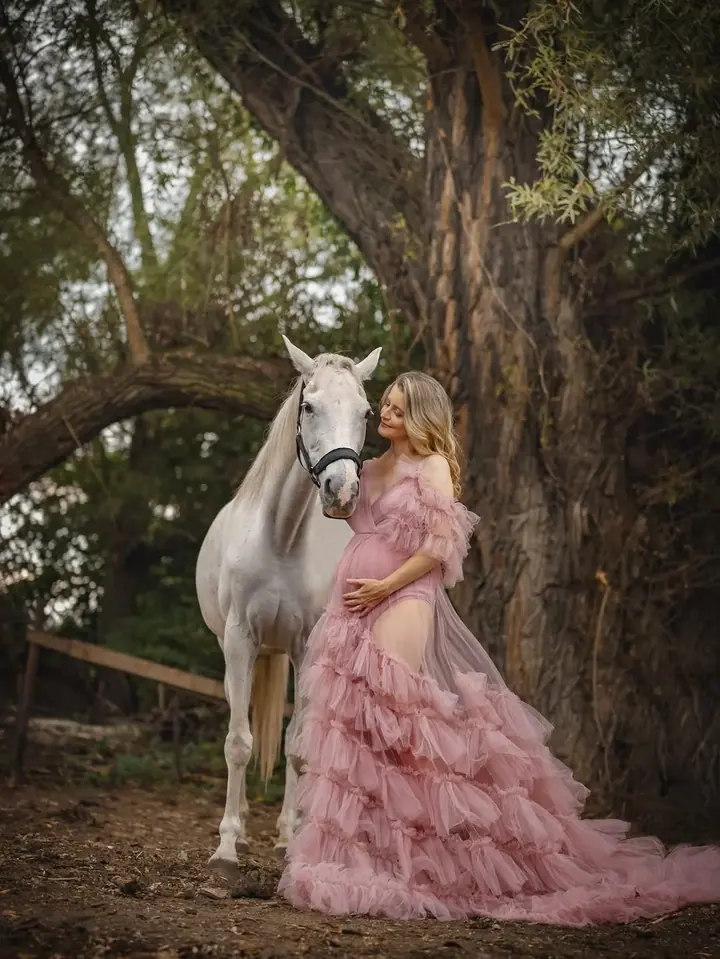
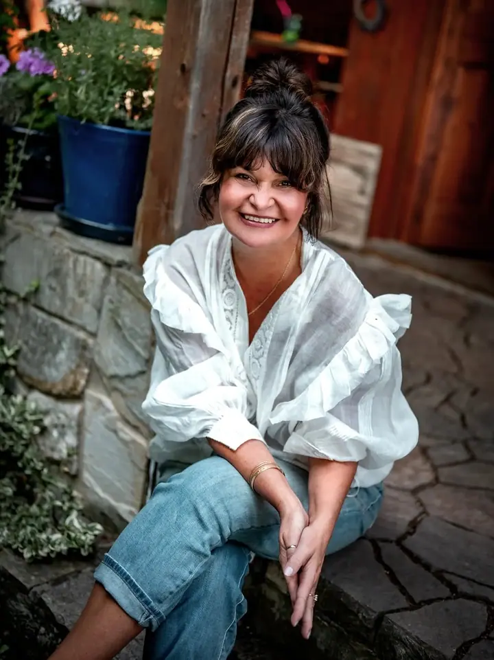
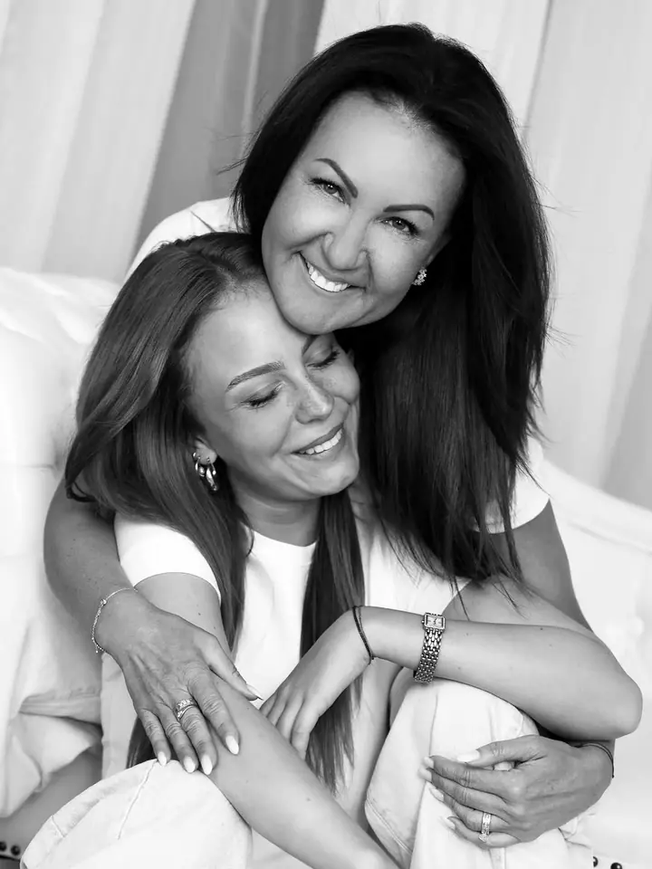
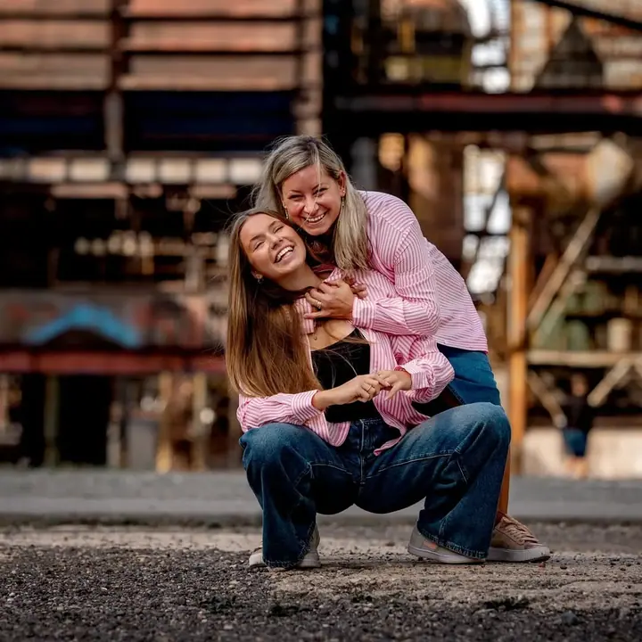

jedna
Portréty pro ženy
Focení pro ženy, které si chtějí připomenout, jak jsou krásné. Fotím krásu duše a pomáhám vám vrátit si lásku a úctu k sobě.


Jmenuji se Petra Kubicová a fotím v Ostravě a okolí. Fotím život, krásu duše, lásku i přítomné okamžiky rodinného štěstí. Nejvíc mě těší, když se žena na svých fotkách znovu uvidí taková, jaká opravdu je.
Více o mně
Co fotím
jedna
Focení pro ženy, které si chtějí připomenout, jak jsou krásné. Fotím krásu duše a pomáhám vám vrátit si lásku a úctu k sobě.
dvě
Fotím život a přítomné okamžiky rodinného štěstí, ať jste maminka s dcerou, nebo celá rodina i s motorkou.
tři
Fotím lásku dvou lidí. Venku při západu slunce, v poli nebo tam, kde je vám spolu dobře.
Fotím život, lásku a krásu duše

Za objektivem
Fotografie pro mě nejsou jen hezké obrázky. Fotím život, krásu duše a lásku, kterou mezi sebou lidé mají. Ať jde o maminku s dcerou, zamilovaný pár nebo celou rodinu, hledám chvíle, kdy jste sami sebou.
Velkou část mé práce tvoří focení pro ženy. Chci ženám vracet sebelásku a sebeúctu. Spousta z nás se před foťákem necítí dobře, a o to víc mě baví ukázat vám, jak krásně ve skutečnosti vypadáte.
Fotím venku v přírodě, v ostravských industriálních kulisách i v interiéru. Vedle zakázek se věnuji i vlastním projektům a ráda sdílím, jak to u focení vypadá ze zákulisí.
Petra
Napište mi, co byste si přáli nafotit. Společně domluvíme termín a typ focení.
Poradím vám s místem, oblečením a celkovou atmosférou, aby fotky odpovídaly vám.
Fotíme v klidu a bez spěchu. Povedu vás, takže nemusíte umět pózovat.
Vyberu a pečlivě upravím ty nejlepší snímky a pošlu vám je k přehrání.
Portfolio
Otázky
Určitě. Většina žen, které fotím, má stejný pocit. Během focení vás povedu a o pózování se starat nemusíte.
Fotím v Ostravě a okolí, venku v přírodě, v industriálních prostorách i v interiéru. Místo vybereme podle toho, co vám sedí.
Před focením spolu probereme oblečení i barvy, aby vše ladilo k místu a k vám.
Ano, ráda fotím rodiny i dvojice, například maminku s dcerou. Klidně i s vaší motorkou nebo jiným kouskem, který k vám patří.
Napište pár vět o tom, co si představujete. petra@petrakubicova.cz